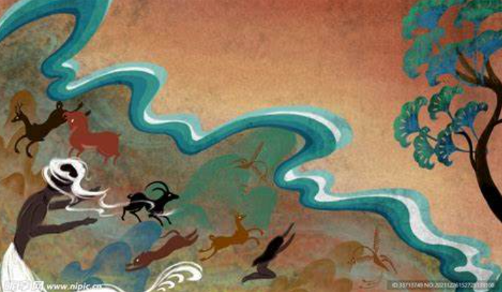
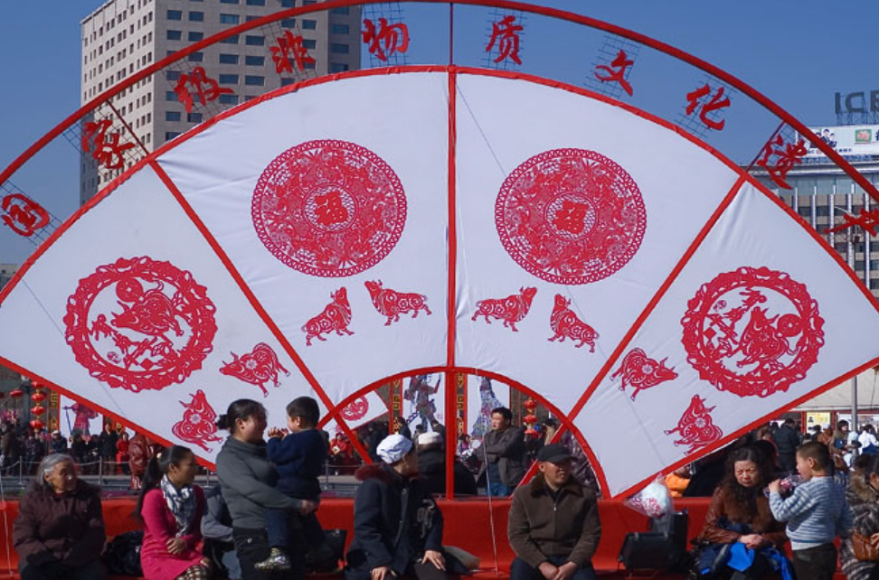
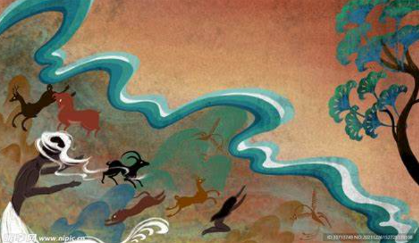
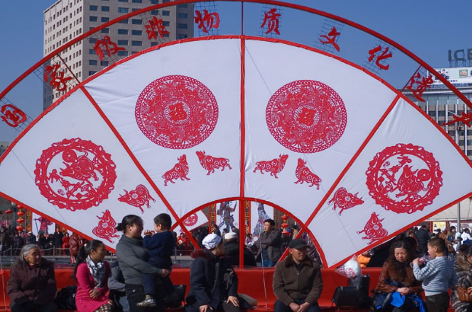
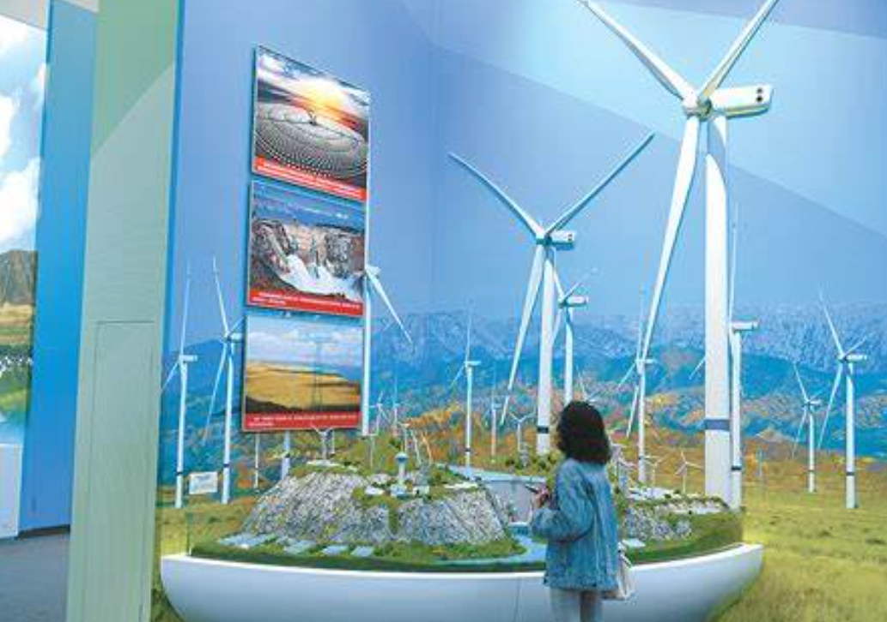
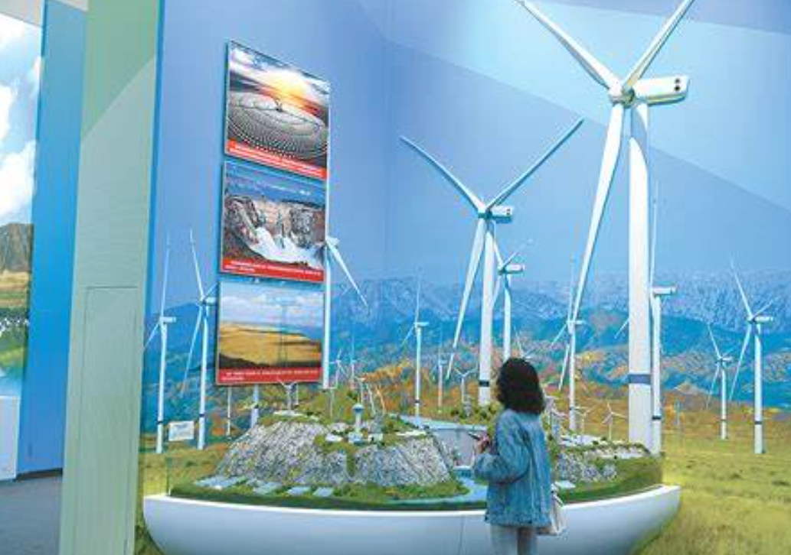

 

青海历史概述
青海的历史可以追溯到远古时期。在漫长的历史进程中，青海作为丝绸之路的重要枢纽，不仅连接了东西方的经济和文化交流，还形成了独特的民族融合特色。
远古时期
在远古时期，青海的土地上就有人类的活动痕迹。这里孕育了丰富的史前文化，例如新石器时代的喇家遗址，展示了古代人类的智慧。
丝绸之路时期
青海是丝绸之路南道的重要组成部分，沟通了中原与西域的文化和经济交流。在唐代，这里成为吐蕃与唐朝交汇的重要区域。
近现代发展
近代以来，青海在经济、文化和生态方面取得了显著成就。尤其是在建国后，青海成为中国重要的资源省份之一。